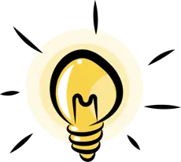
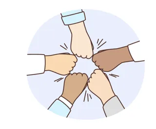
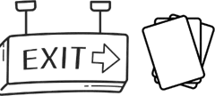

🤲
📖
💰
🛡️
🌟
Islamic Education · Grade 11 · Non-Arabic speakers
One combined lesson · 50 minutes
Chastity and Self-Restraint (Isti'faf)
Seeking self-restraint (isti'faf): striving for chastity and holding back from the unlawful, in money by not begging and in desires and relationships; it brings dignity to individuals and society.
Explain
Explain
Explain
Propose
Before we begin…
Remember & connect
🤲
From the previous lesson
Why can reason alone not set the details of worship?
Think – pair – share
«The ignorant think them rich because of their restraint»… who are they?
A situation to discuss
What would you do in their place?
📖
An able young man begs every day; another works a simple job and holds his head high. Who has more dignity, and why?
🤔 How does self-restraint give a Muslim dignity?
Recite & reflect
With the Noble Qur’an
لِلۡفُقَرَآءِ ٱلَّذِينَ أُحۡصِرُواْ فِي سَبِيلِ ٱللَّهِ لَا يَسۡتَطِيعُونَ ضَرۡبٗا فِي ٱلۡأَرۡضِ يَحۡسَبُهُمُ ٱلۡجَاهِلُ أَغۡنِيَآءَ مِنَ ٱلتَّعَفُّفِ تَعۡرِفُهُم بِسِيمَٰهُمۡ لَا يَسۡـَٔلُونَ ٱلنَّاسَ إِلۡحَافٗاۗ وَمَا تُنفِقُواْ مِنۡ خَيۡرٖ فَإِنَّ ٱللَّهَ بِهِۦ عَلِيمٌ ﴿273﴾
[Al-Baqarah: 273]
“[Charity is] for the poor who have been restricted for the cause of Allah, unable to move about in the land. An ignorant [person] would think them self-sufficient because of their restraint, but you will know them by their [characteristic] sign. They do not ask people persistently [or at all]. And whatever you spend of good - indeed, Allah is Knowing of it” (273)
Recite & reflect
With the Noble Qur’an
وَلۡيَسۡتَعۡفِفِ ٱلَّذِينَ لَا يَجِدُونَ نِكَاحًا حَتَّىٰ يُغۡنِيَهُمُ ٱللَّهُ مِن فَضۡلِهِۦۗ وَٱلَّذِينَ يَبۡتَغُونَ ٱلۡكِتَٰبَ مِمَّا مَلَكَتۡ أَيۡمَٰنُكُمۡ فَكَاتِبُوهُمۡ إِنۡ عَلِمۡتُمۡ فِيهِمۡ خَيۡرٗاۖ وَءَاتُوهُم مِّن مَّالِ ٱللَّهِ ٱلَّذِيٓ ءَاتَىٰكُمۡۚ وَلَا تُكۡرِهُواْ فَتَيَٰتِكُمۡ عَلَى ٱلۡبِغَآءِ إِنۡ أَرَدۡنَ تَحَصُّنٗا لِّتَبۡتَغُواْ عَرَضَ ٱلۡحَيَوٰةِ ٱلدُّنۡيَاۚ وَمَن يُكۡرِههُّنَّ فَإِنَّ ٱللَّهَ مِنۢ بَعۡدِ إِكۡرَٰهِهِنَّ غَفُورٞ رَّحِيمٞ ﴿33﴾
[An-Nur: 33]
“But let them who find not [the means for] marriage abstain [from sexual relations] until Allah enriches them from His bounty. And those who seek a contract [for eventual emancipation] from among whom your right hands possess - then make a contract with them if you know there is within them goodness and give them from the wealth of Allah which He has given you. And do not compel your slave girls to prostitution, if they desire chastity, to seek [thereby] the temporary interests of worldly life. And if someone should compel them, then indeed, Allah is [to them], after their compulsion, Forgiving and Merciful” (33)
Objective & success criteria
Where are we heading?
Objective: To explain the concept and areas of self-restraint and its effect on the individual and society.
1
I can explain what self-restraint means
Group 1
2
I can explain the areas of self-restraint
Group 2
3
I can explain the effect of self-restraint on the individual and society
Group 3
4
I can propose practical situations in which I show self-restraint
Group 4
Our lesson journey
Story map
Progress check: before the lesson
Where am I now?
Rate yourself from 1 to 5 on each criterion before the lesson and keep your rating.
1
Explain what self-restraint means
1
2
3
4
5
2
Explain the areas of self-restraint
1
2
3
4
5
3
Explain the effect of self-restraint on the individual and society
1
2
3
4
5
4
Propose practical situations in which I show self-restraint
1
2
3
4
5
What isti'faf is
Understanding the lesson
Keeping oneself from begging and from the unlawful, being content with lawful earnings.
Not begging
Understanding the lesson
Allah praised the poor who don't ask people persistently (2:273). «Taking a rope and selling firewood is better than begging.»
When asking is allowed
Understanding the lesson
For real need: debt for reconciliation, a disaster, or proven poverty (Muslim).
Chastity
Understanding the lesson
«Let those who cannot marry keep chaste» (24:33). «Whoever seeks chastity, Allah makes him chaste.»
Key words
Word treasure
💧
Ta'affuf
restraint out of dignity
🤲
Isti'faf
seeking chastity
Key learning points
Building understanding
📖
1
«For the poor who are restricted in the cause of Allah… the ignorant think them rich because of their restraint.»
💰
2
In money: working and not begging: «Whoever seeks restraint, Allah makes him restrained; whoever seeks independence, Allah makes him independent.»
🛡️
3
In desires: lowering the gaze and guarding chastity: «Let those who cannot marry keep chaste until Allah enriches them», with fasting as protection.
🌟
4
Effects: personal dignity, a strong society, solidarity, mental health and protecting the family.
Lessons we take
Infer & act
1
Self-respect means working, not begging.
2
Allah helps those who seek chastity.
Enrichment: did you know?
Widening the horizon

«True richness is richness of the soul.»
Group work map
Each group = one success criterion

Group 1
Explain what self-restraint means
Group 2
Explain the areas of self-restraint
Group 3
Explain the effect of self-restraint on the individual and society
Group 4
Propose practical situations in which I show self-restraint
Leader
manages time and tasks
Researcher
finds the evidence
Writer
records the answer
Presenter
presents in two minutes
15 minutes work → present → peer feedback → teacher → model answer
Group 1
Success criterion 1
📖
I can explain what self-restraint means
Core task · everyone
1. Go back to “What isti'faf is” and extract what meets the criterion.
2. Explain what self-restraint means – with evidence from the text.
3. Give a real example from your life.
★ Bigger challenge
Answer in depth: How does self-restraint give a Muslim dignity?
Product: mind map
Support: “Understanding the lesson” slides.
Group 2
Success criterion 2
💰
I can explain the areas of self-restraint
Core task · everyone
1. Go back to “Not begging” and extract what meets the criterion.
2. Explain the areas of self-restraint – with evidence from the text.
3. Give a real example from your life.
★ Bigger challenge
Compare a young man working for a small wage with an able one living off asking, in light of isti'faf. What is the effect of each on himself and society?
«The upper hand is better than the lower hand».
Product: comparison table
Support: “Understanding the lesson” slides.
Group 3
Success criterion 3
🛡️
I can explain the effect of self-restraint on the individual and society
Core task · everyone
1. Go back to “When asking is allowed” and extract what meets the criterion.
2. Explain the effect of self-restraint on the individual and society – with evidence from the text.
3. Give a real example from your life.
★ Bigger challenge
Analyse the situation: An able young man begs every day; another works a simple job and holds his head high. Who has more dignity, and why?
Product: short role-play
Support: “Understanding the lesson” slides.
Group 4
Success criterion 4
🌟
I can propose practical situations in which I show self-restraint
Core task · everyone
1. Go back to “Chastity” and extract what meets the criterion.
2. Propose practical situations in which I show self-restraint – with evidence from the text.
3. Give a real example from your life.
★ Bigger challenge
Design a weekly plan to apply: I work and rely on myself. · I lower my gaze from the unlawful. · I avoid asking people for things.
Product: awareness poster
Support: “Understanding the lesson” slides.
Model answers
Checking our understanding
Reflect & critique
Correct and justify
«Whoever seeks restraint, Allah makes him restrained.»
✓
True
«Begging while able to work is self-restraint.»
✗
False
«A young man who can't marry spends nights on inappropriate sites. What plan best fits Islamic guidance? Fasting, lowering the gaze, filling time usefully and good company»
✓
True
«A young man able to work always asks people for money. Advice from the lesson on isti'faf? Carry on»
✗
False
Two stars and a wish
Peer feedback
Your feedback to classmates is sincere advice: kind in style, aimed at improvement.
★ Star 1
“I liked in your presentation…”
★ Star 2
“Your evidence was convincing because…”
✦ Wish
“I wish you had added…”
✓ Correct evidence
✓ Real example
✓ Clear language
✓ Link to the UAE
The lesson and national identity
Our values, our nation
The UAE encourages youth to work and start businesses to earn a dignified living.

Hiraa quick challenge
5 questions
1
«Whoever seeks to be chaste...»
a) Allah will make him chaste · b) gets tired · c) is forgotten · d) becomes poor
Answer: a
2
Ways of chastity regarding desires include:
a) lowering the gaze and fasting · b) watching forbidden things · c) idle time · d) bad company
Answer: a
3
What is the effect of self-restraint on dignity?
a) It protects dignity and raises one's standing · b) It humiliates · c) It weakens · d) No effect
Answer: a
4
«The upper hand is better than the lower hand». Link to isti'faf?
a) Working and giving are nobler than asking people · b) Asking is better · c) No link · d) Work is shameful
Answer: a
5
A young man cannot marry yet. What is the Qur'an's guidance?
a) ﴿Let them keep chaste﴾: protect himself, fast and stay busy until Allah provides · b) Do as he likes · c) Despair · d) Isolate himself
Answer: a
Progress check: after the lesson
How far have I come?
Rate yourself again after the lesson and compare with your rating at the start.
1
Explain what self-restraint means
1
2
3
4
5
2
Explain the areas of self-restraint
1
2
3
4
5
3
Explain the effect of self-restraint on the individual and society
1
2
3
4
5
4
Propose practical situations in which I show self-restraint
1
2
3
4
5
Exit card
Finishing with impact

I will apply
☐ I work and rely on myself.
☐ I lower my gaze from the unlawful.
☐ I avoid asking people for things.
I reflect
What has changed in my understanding after today’s lesson?
✓ What I did well
↻ What I will improve